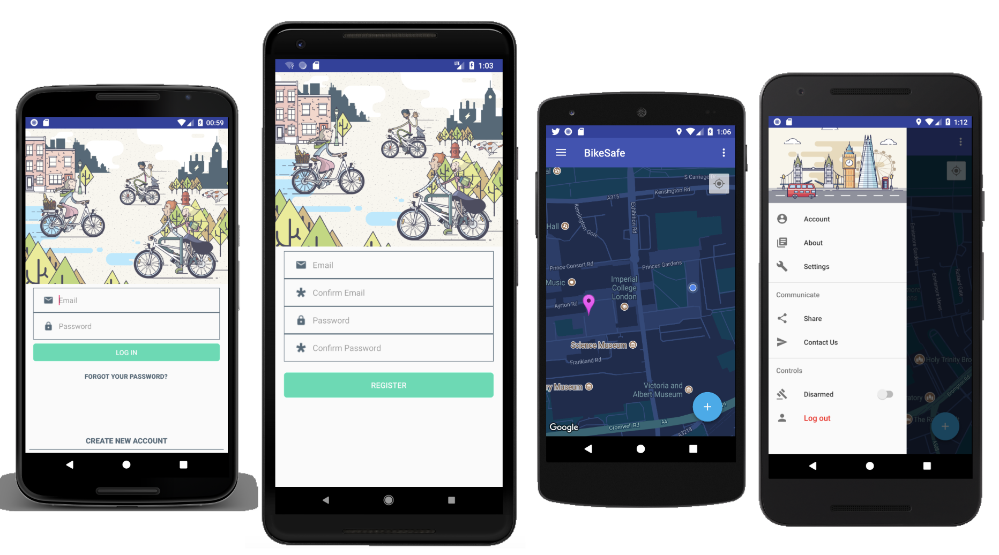
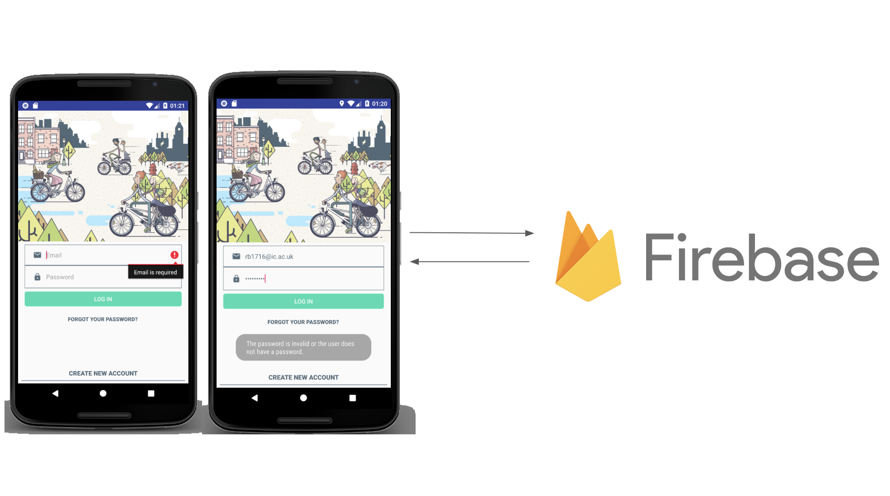
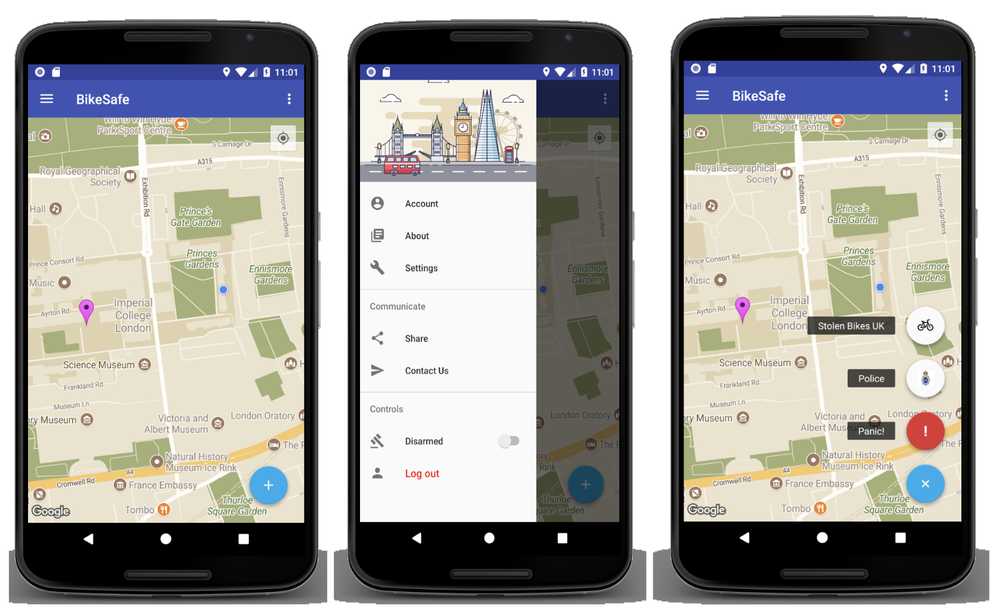
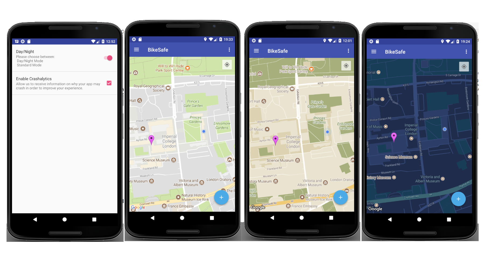
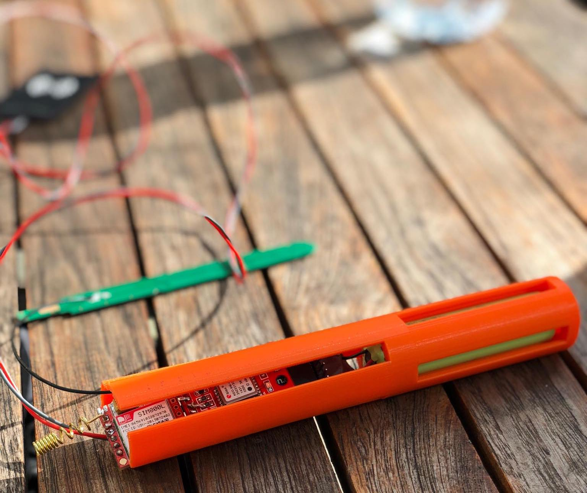

BIKESAFE
Second year EEE group project
Imperial College London
Just under 2 million people cycle almost every day in the UK (Cyclinguk.org 2017), and bike theft continues to rise. With almost 400,000 bikes stolen each year in the UK, the issue needs to be addressed. An affordable and reliable security system that can be used to prevent bike theft would benefit many people who commute in this manner across the world. The number of stolen bicycles makes it necessary to have a reliable and affordable tracking system that is convenient for the user, difficult to disable, and effective. The functionality and operation of the bike must be the same, while also offering a high accuracy location system. Furthermore, the anti-theft device will need to be able to run for several days and communicate wirelessly to a mobile interface.
BikeSafe is a smart, concealed bike-tracker that is discrete, compatible with all bikes, has a long battery life and effectively an infinite range. For the prototype we designed and 3D printed a cylindrical case, containing the cell in the bottom half and electronics are situated in the top portion of the enclosure. Our production method for securing the device utilises a rubber sleeve, which will grip against the internal wall of the seat tube. An Android application that uses the Google Maps API to display the exact location of the user's bike has been developed. With some minor changes to the code the application will be ready to launch on the Play Store. A real-time Firebase database is being used to store the bikes location and all user preferences on the application. The first prototype that we have developed has a production below £25 and is priced well below any market competitors (£150). The low cost of the device, provides affordable and accessible security to all bike users.
Scroll down to see more
BikeSafe Android User Interface
Firebase AUTH
Navigation Drawer
User Modes
Device
For further information I can be contacted using the contact section.